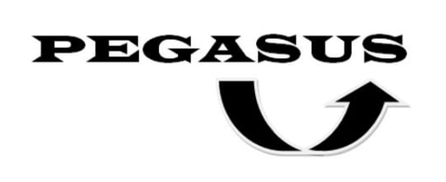

Un site d'un transport pour l'étudiant :


Ce site contient 5 pages , la premiere page c'est la page d'accueil , elle contient Une salutation traduisé en 5 langues les plus utilisée dans le maroc , ensuite les pages 2,3 qui detaillé le service de transport et aussi donne des informations riches de ce dernier , et en fin il y'a les deux derniere pages qui contient le contact et la page d'inscription .
Le Logo :
L'idée de logo est inspiré par le logo d"AMAZON" , La fléche donne une déstination de A vers S , cette dernière présente le niveau actuel du projet "AMATEUR" et le futur de ce projet "SUPERBE"